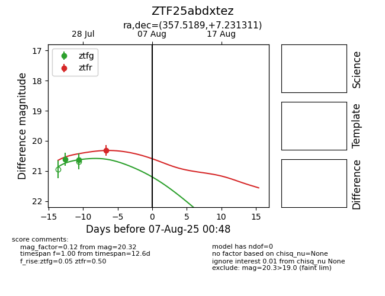

Target ZTF25abdxtez at 2025-08-07 06:30, see:
FINK: fink-portal.org/ZTF25abdxtez
Lasair: lasair-ztf.lsst.ac.uk/objects/ZTF25abdxtez
ALeRCE: alerce.online/object/ZTF25abdxtez
alt names
ZTF25abdxtez (ztf,fink)
coordinates:
equatorial (ra, dec) = (357.5189,+7.23131)
galactic (l, b) = (97.3517,-52.56600)
photometry
last ztfg=20.63, ztfr=20.37
2 ztfg, 2 ztfr detections
